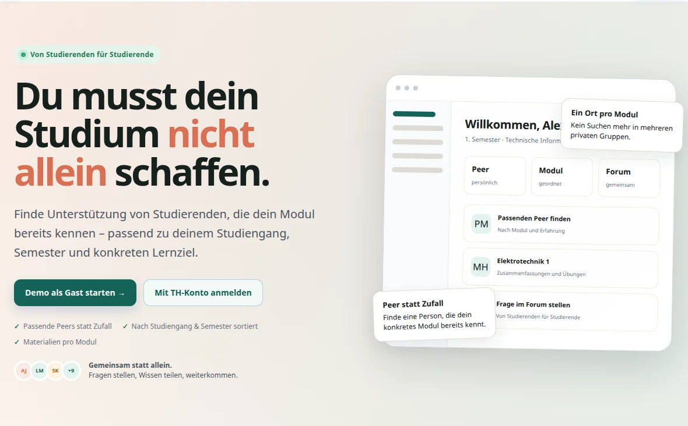

PeerLearn TH
- Problem
- Lernmaterialien und passende Ansprechpartner:innen waren über private Gruppen verteilt.
- Mein Beitrag
- Konzept, Oberfläche und Full-Stack-Implementierung mit Matching, Modul-Hubs, Forum, Authentifizierung und KI-Anbindung.
- Ergebnis
- Nutzbarer Pilotprototyp; bestätigte Einreichung zum Studienpreis der TH Köln 2026 und Posterwalk.